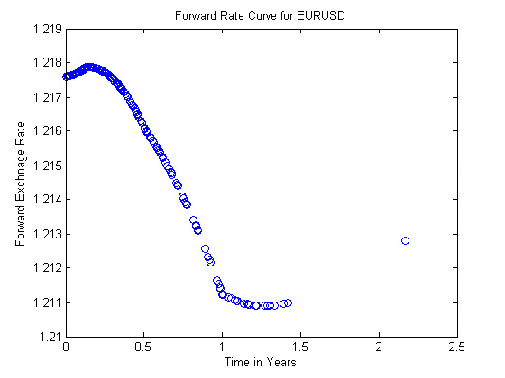

Contents
- Intro
- Step 1 - Loading in the data
- Import Libor data from the input spreadsheet
- Import Euribor data from the input spreadsheet
- Import foreign exchange rate data from the input spreadsheet
- Import deal data from the input spreadsheet
- Import as of date from the input spreadsheet
- Step 2 - Interpolate Libor and Euribor rates for each maturity date linearly
- Step 3 - Calculating forward rate for each maturity & pricing cross-currency forward contract
- Step 4 - Plot Forward Rate Curve
function[fxforward] = fxforward
Intro
This file replicates cross-currency forward pricing using covered interest parity (CIP). It generates and plots CIP-implied forward exchange rates and calculates forward contract value. There are five inputs - domestic interest rate curve, foreign interest rate curve, spot exchange rate, maturity date, and strike price
Step 1 - Loading in the data
Import Libor data from the input spreadsheet
Import the data
[~, ~, raw] = xlsread('C:\Program Files\MATLAB\R2012a\MatLab Publish\FX Forward\input.xls','Libor'); raw = raw(2:30,1:2); % Create output variable data = cell2mat(raw); % Allocate imported array to column variable names LiborNodes = data(:,1); Libor = data(:,2); % Clear temporary variables clearvars data raw columnIndices;
Import Euribor data from the input spreadsheet
Import the data
[~, ~, raw] = xlsread('C:\Program Files\MATLAB\R2012a\MatLab Publish\FX Forward\input.xls','Euribor'); raw = raw(2:end,:); % Create output variable data = cell2mat(raw); % Allocate imported array to column variable names EuriborNodes = data(:,1); Euribor = data(:,2); % Clear temporary variables clearvars data raw columnIndices;
Import foreign exchange rate data from the input spreadsheet
Import the data
[~, ~, raw] = xlsread('C:\Program Files\MATLAB\R2012a\MatLab Publish\FX Forward\input.xls','EURUSD'); raw = raw(end,:); % Create output variable EURUSD = cell2mat(raw); % Clear temporary variables clearvars raw;
Import deal data from the input spreadsheet
Import the data, extracting spreadsheet dates in MATLAB datenum format
[~, ~, raw, dateNums] = xlsread('C:\Program Files\MATLAB\R2012a\MatLab Publish\FX Forward\input.xls','Deals','','',@convertSpreadsheetDates); raw = raw(2:end,:); dateNums = dateNums(2:end,:); % Replace date strings by MATLAB datenums R = ~cellfun(@isequalwithequalnans,dateNums,raw) & cellfun('isclass',raw,'char'); % Find Excel dates raw(R) = dateNums(R); % Create output variable data = cell2mat(raw); % Allocate imported array to column variable names Deal = data(:,1); Position = data(:,2); Strike = data(:,3); Maturity = data(:,4); % Clear temporary variables clearvars data raw dateNums R columnIndices;
Import as of date from the input spreadsheet
Import the data, extracting spreadsheet dates in MATLAB datenum format
[~, ~, raw, dateNums] = xlsread('C:\Program Files\MATLAB\R2012a\MatLab Publish\FX Forward\input.xls','AsOfDate','','',@convertSpreadsheetDates); raw = raw(end,:); dateNums = dateNums(end,:); % Replace date strings by MATLAB datenums R = ~cellfun(@isequalwithequalnans,dateNums,raw) & cellfun('isclass',raw,'char'); % Find Excel dates raw(R) = dateNums(R); % Create output variable Today = cell2mat(raw); % Clear temporary variables clearvars raw dateNums R;
Step 2 - Interpolate Libor and Euribor rates for each maturity date linearly
Maturity=Maturity-Today; LiborInterp=interp1(LiborNodes, Libor, Maturity, 'linear', 'extrap'); EuriborInterp=interp1(EuriborNodes, Euribor, Maturity, 'linear', 'extrap');
Step 3 - Calculating forward rate for each maturity & pricing cross-currency forward contract
n = length(Deal); Value=zeros(1,n); Forward=zeros(1,n); for i = 1:n Forward(i)=EURUSD * ((1+LiborInterp(i))/(1+EuriborInterp(i)))^(Maturity(i)/365); Value(i)=Position(i)*(Forward(i)-Strike(i)); end
Step 4 - Plot Forward Rate Curve
plot(Maturity/365,Forward,'bo') title('Forward Rate Curve for EURUSD'); xlabel('Time in Years'); ylabel('Forward Exchnage Rate');
